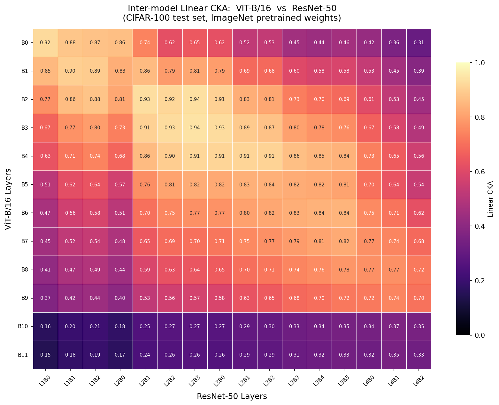
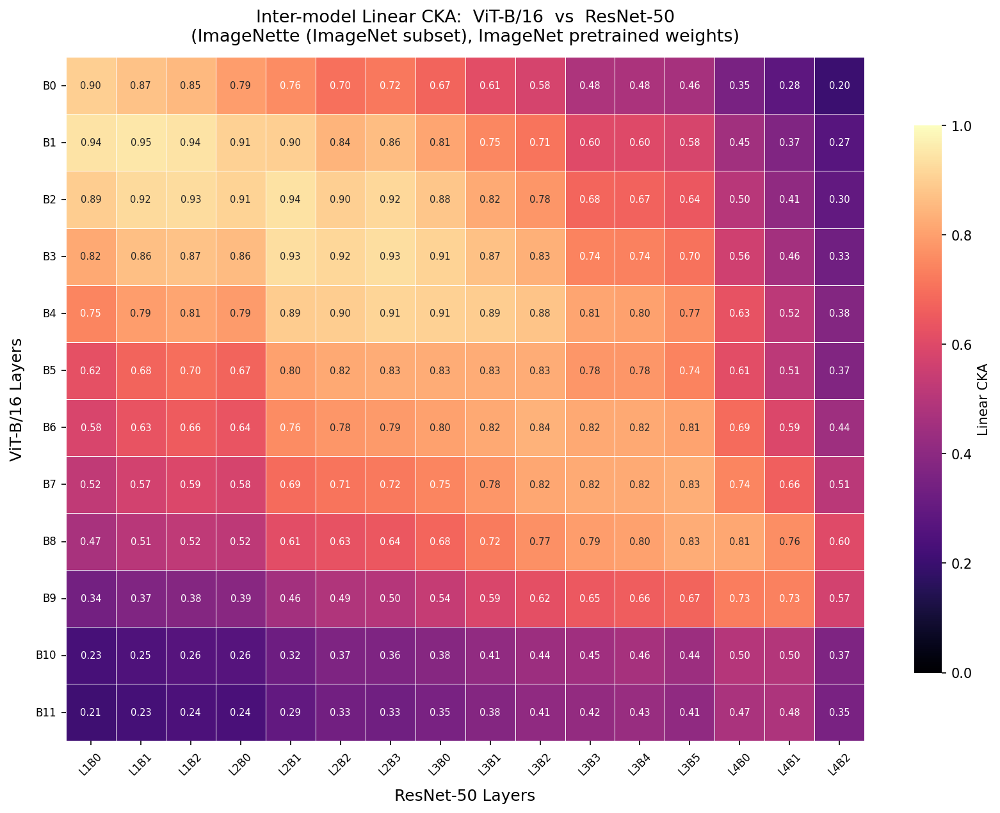
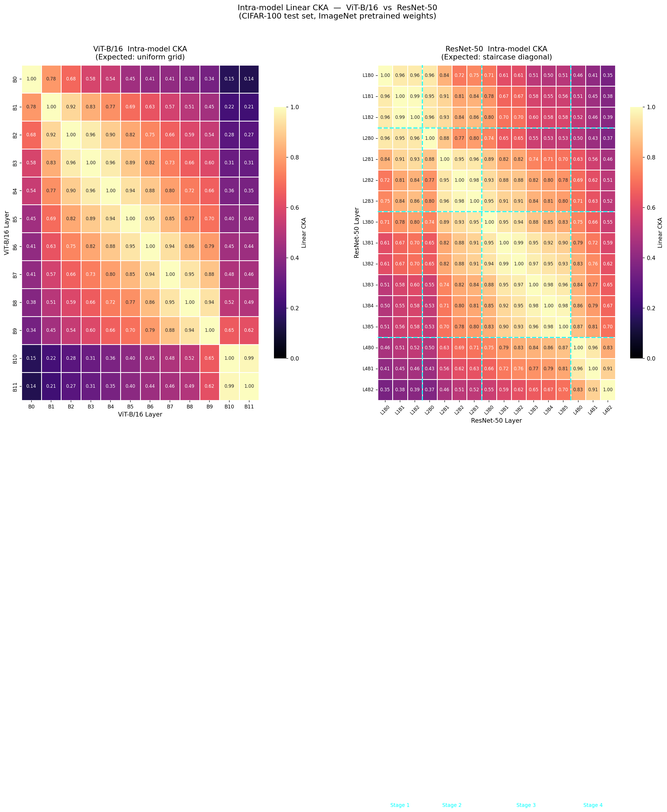
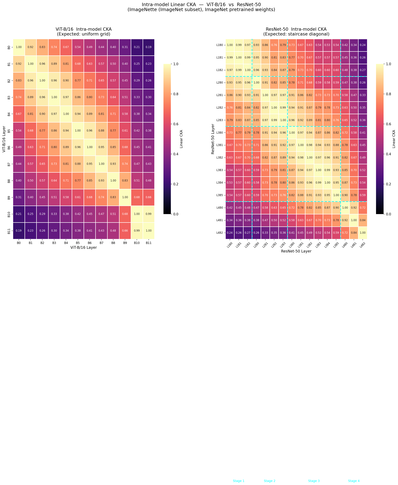
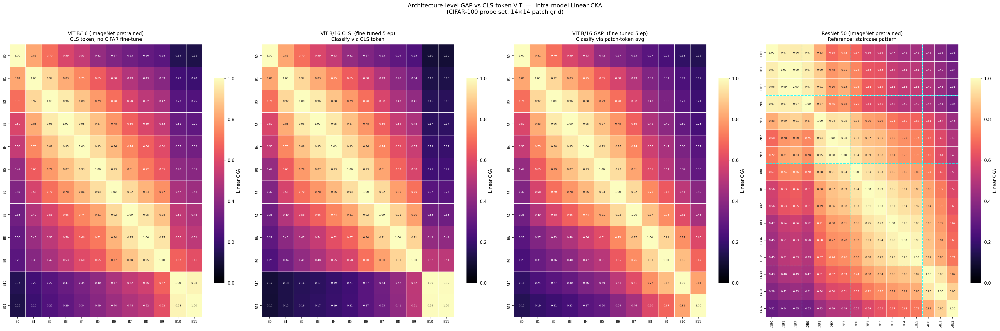
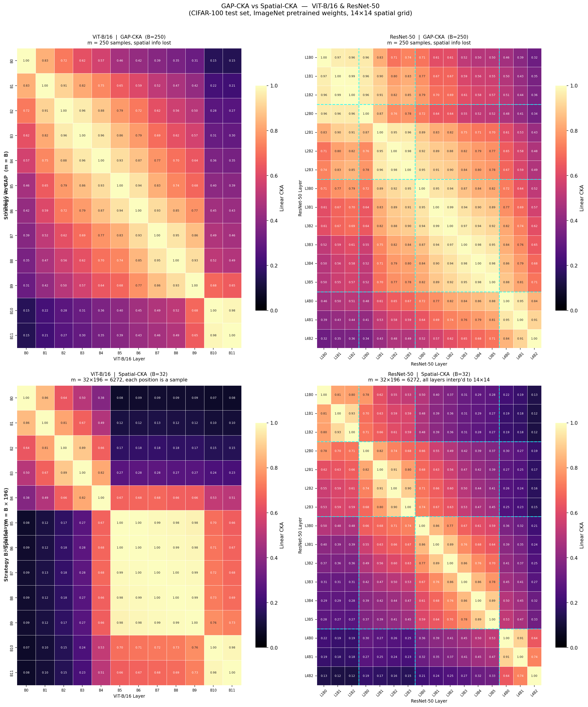
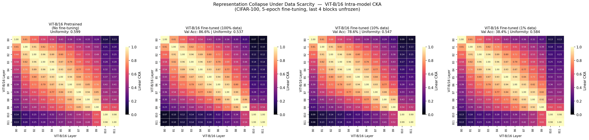
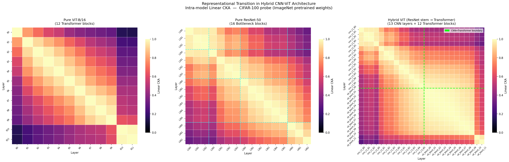
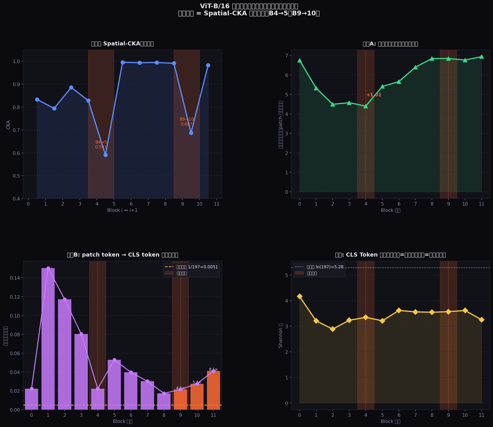

基于 Linear CKA 的 ViT-B/16 与 ResNet-50 内部表示分析 · 复现 + 两项原创扩展
PAPER OVERVIEW
Raghu et al., NeurIPS 2021 — 首次系统性地用 CKA 比较 ViT 与 CNN 的内部表示结构
Linear CKA — 基于 Hilbert–Schmidt 独立性准则的表示相似度度量，对正交变换和各向同性缩放不变。
ViT-B/16（12个 Transformer 块，~86M 参数）vs ResNet-50（4个阶段、16个 Bottleneck 块，~25M 参数），均使用 ImageNet-1K 预训练权重。
ViT 表现出"均一网格"式层间相似性；ResNet 呈现分阶段的"楼梯"结构。深层 ViT 与 ResNet 特征几乎完全发散。
原论文核心图表复现


METHODOLOGY
Linear CKA 的数学推导、特征提取管线、以及两种测量模式
线性 Gram 矩阵：$K = XX^\top$，$L = YY^\top$
中心化矩阵：$H = I - \frac{1}{m}\mathbf{1}\mathbf{1}^\top$
CKA = 1 表示表示几何完全相同；CKA = 0 表示表示正交。该度量对正交变换和各向同性缩放不变，是与特征维度无关的几何相似度。
对每层激活做全局平均池化，输出 $[B, C]$ 的通道级特征向量。ResNet 对 $H\times W$ 做空间均值；ViT 对所有 $N$ 个 token 做均值。样本量 $m = 250$。
捕获通道级分布特性，计算量小，Gram 矩阵约 250×250。
保留空间结构。ResNet 特征图双线性插值到 $14\times14$ 后 reshape 到 $[B\cdot196, C]$；ViT patch token（去掉 CLS）reshape 到 $[B\cdot196, C]$，$m\approx4900$。
Gram 矩阵约 4900×4900（~157 MB），全程保留在 GPU 上。
// 模型钩子挂载位置示意图
REPRODUCTION EXPERIMENTS
完整复现 Raghu et al. 四项核心实验，验证原论文发现的稳健性
实验设计：对 ViT-B/16 所有 12 个 Transformer 块与 ResNet-50 所有 16 个 Bottleneck 块，两两计算 CKA，得到 12×16 相似度矩阵。冻结模型，GAP 模式提取特征，使用 CIFAR-100 和 ImageNette 两个探测数据集对比。
实验设计：对单个模型内部所有层对计算 CKA，得到对称矩阵。同样比较 CIFAR-100 与 ImageNette 两种探测下的可视化差异。


核心问题：分类头的设计方式（CLS token vs 全局平均池化）是否会改变 ViT 内部所有层 的表示结构？原论文 Figure 10 给出了肯定答案。本实验在 CIFAR-100 上重现这一发现，并将解冻层数从 4 层扩展到 8 层，以放大两种头部设计的差异。
// 实验三：两种 ViT 变体架构对比 · 梯度流向示意
| 对比维度 | ViT-CLS Head | ViT-GAP Head |
|---|---|---|
| 分类向量来源 | encoder_out[:, 0]（CLS token） |
encoder_out[:, 1:, :].mean(dim=1) |
| 梯度流向 | 仅流经 1 个 token（CLS），其余 196 个 patch token 梯度截断 | 均等流经全部 196 个 patch token，每个 patch 都必须携带分类信息 |
| 对 patch 表示的压力 | 低——patch 只需向 CLS 汇报，可保留各自独立的空间特征 | 高——每个 patch 独立决策，信息被迫均匀化到所有空间位置 |
| 预期 CKA 结构 | 均一亮格（保持预训练结构） | 均一性下降，层间分化（向 CNN 风格靠近） |
| 解冻层 / 训练轮次 | Block 4–11（后 8 层）+ head · 5 epochs · AdamW lr=1e-4 · Cosine LR · 梯度裁剪 max_norm=1.0 | |
为何保留 CLS token 在 GAP 变体中？ViTGAPHead 的 encoder 序列仍包含 CLS token（以维持位置编码不变），但其输出被丢弃，分类向量完全来自 patch token 均值。这保证两个变体的 encoder 结构完全相同，实验变量仅为"读取哪个 token"。

实验设计：在同一批冻结模型上对比 GAP-CKA（$m=250$，$[B,C]$ 特征）和 Spatial-CKA（$m\approx4900$，$[B\cdot196,C]$ 特征），通过保留空间结构来揭示 GAP 均值化所掩盖的信息。

NOVEL CONTRIBUTIONS
在复现基础上提出两项新实验，深入探究 ViT 表示结构的边界条件
量化 CIFAR-100 训练数据从 100% 减少到 1% 时，ViT 均一 CKA 结构的退化过程，并引入"表示均一性分数"指标。
构建 ResNet-50 stem + ViT-B/16 encoder 混合模型，通过 25×25 CKA 矩阵揭示 CNN–Transformer 边界处的表示不连续性。
实验设计：分别用 100%（50,000 样本）、10%（5,000 样本）、1%（500 样本）的 CIFAR-100 训练数据微调 ViT-B/16（解冻最后 4 块 + 分类头，5 个 epoch，AdamW + cosine LR）。定义表示均一性分数（Uniformity Score）为 CKA 矩阵非对角元素均值，量化均一结构的保留程度。

| 训练条件 | 均一性分数 | 验证精度 | 解读 |
|---|---|---|---|
| 预训练基准 | 0.5992 | — | 健康的均一结构 |
| 100% 数据 | 0.5369 | 86.6% | 结构保持；微调成功，有任务专化 |
| 10% 数据 | 0.5471 | 78.6% | 中度退化；泛化能力有限 |
| 1% 数据 | 0.5840 ↑ | 38.4% | 崩塌：回归预训练基准，任务专化失败 |
实验设计：构建混合模型：ResNet-50 的 layer1–layer3（13 个 Bottleneck 块，输出 $[B,1024,14,14]$）+ 线性投影（1024 → 768）+ 预训练 ViT-B/16 全部 12 个 Transformer 块。两部分均使用各自原始预训练权重，不做联合微调。对全部 25 层注册钩子，计算 25×25 模型内部 CKA 矩阵。

// 混合模型结构示意
DEEP ANALYSIS · POST-HOC
通过直接提取 12 层注意力权重矩阵，验证两个断层的成因假说
对每个 patch query token，计算它关注的所有 key token 的加权平均空间距离，衡量"注意力能看多远"。
对每个 patch token（作为 query），它分配给 CLS token（位置 0）的注意力权重大小，衡量"patch 向 CLS 汇报信息"的程度。
| Block | 相邻层 CKA | 注意力距离（格） | patch→CLS 权重 | × 均匀基线 | 阶段 |
|---|---|---|---|---|---|
| B0 | — | 6.76 | 0.0223 | 4.4× | 早期聚合 |
| B1 | 0.834 | 5.32 | 0.1503 | 29.6× | 早期聚合 |
| B2 | 0.794 | 4.49 | 0.1172 | 23.1× | 早期聚合 |
| B3 | 0.886 | 4.57 | 0.0803 | 15.8× | 早期聚合 |
| B4 | 0.828 | 4.40 | 0.0223 | 4.4× | 早期聚合 |
| B4→B5 | 0.591 ⚡ | +1.01 跳变 | CLS聚合结束 → 全局混合开始 | ── 第一断层 ── | |
| B5 | 0.996 | 5.41 | 0.0528 | 10.4× | 稳定混合 |
| B6 | 0.994 | 5.66 | 0.0397 | 7.8× | 稳定混合 |
| B7 | 0.995 | 6.40 | 0.0301 | 5.9× | 稳定混合 |
| B8 | 0.995 | 6.85 | 0.0173 | 3.4× | 稳定混合 |
| B9 | 0.991 | 6.84 | 0.0214 | 4.2× | 稳定混合 |
| B9→B10 | 0.687 ⚡ | 无跳变(6.77) | FFN 表示旋转（非注意力驱动） | ── 第二断层 ── | |
| B10 | 0.983 | 6.77 | 0.0275 | 5.4× | 分类准备 |
| B11 | — | 6.94 | 0.0412 | 8.1× | 分类准备 |

B1–3 的 patch→CLS 注意力异常高（29.6×），同时注意力收缩到最局部（距离4.40），反映 patch token 在"向 CLS 集中汇报"的同时彼此局部交互。B4 标志此聚合阶段结束，B5 注意力距离跳变 +1.01 格，进入全局混合模式。两种模式的空间响应几何不兼容，产生断层。
B9→10 注意力距离无跳变（6.84→6.77），patch→CLS 权重仅小幅上升（4.2×→5.4×），排除了注意力模式突变的解释。第二断层由 Block 10 的 FFN（MLP）权重主导：B5–9 相邻 CKA≈0.99（几乎原地踏步），B10 的 MLP 做了一次较大的特征空间旋转，将表示从"稳定全局混合"切换到"分类准备"模式，此后 patch→CLS 持续回升（B11: 8.1×），CLS 开始最终汇聚。
FINDINGS SUMMARY
六项实验的核心发现汇总与更广泛的意义
ViT 与 ResNet 在早期层共享低级特征提取，随深度增加表示完全发散。结论对两种探测数据集均稳健。
ResNet 阶段结构在 ImageNette 下清晰可见，在 CIFAR-100 下被低分辨率噪声掩盖。这是重要的方法论发现。
GAP 头（解冻后 8 层，5 ep）通过均等梯度流破坏 ViT 均一结构，CLS 头保持均一性。分类头设计从根本上影响表示组织。
ViT Spatial-CKA 在块 5–6 处揭示表示重组的相变，GAP 的均值化操作完全掩盖了此现象。
极端数据稀缺使微调块回退到预训练结构，均一性分数反常升高。为 ViT 数据饥渴性提供机制解释。
混合模型中 CNN 与 Transformer 部分运行在几何不兼容的表示空间，边界处 CKA ≈ 0。联合训练不可或缺。
数据稀缺实验揭示了为什么 ViT 需要大量数据：不仅是精度问题，更是表示重组的根本失败。针对 ViT 的数据增强策略应同时以表示均一性分数作为评估指标，而非仅看精度。
仅拼接预训练的 CNN 与 Transformer 组件不足以构建有效的混合模型。结果表明，至少需要在两个部分之间加入可学习的适配器，或进行端到端的联合训练，以弥合表示鸿沟。